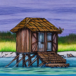
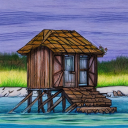

Lakeshack¶
 

A simplified data lakehouse, more of a data lakeshack, optimized for retrieving filtered records from Parquet files. Similar to the various lakehouse solutions (Iceberg, Hudi, Delta Lake), Lakeshack gathers up the min/max values for specified columns from each Parquet file and stores them into a database (Metastore). When you want to query for a set of records, it first checks the Metastore to get the list of Parquet files that might have the desired records, and then only queries those Parquet files. The files may be stored locally or in S3. You may query using either native pyarrow or leverage S3 Select.
To acheive optimal performance, a partitioning & clustering strategy (which specifies how the records are written to the Parquet files) should align with the main query pattern expected to be used on the data. See the documentation for more information on this.
Documentation¶
Documentation can be found at https://mhendrey.github.io/lakeshack